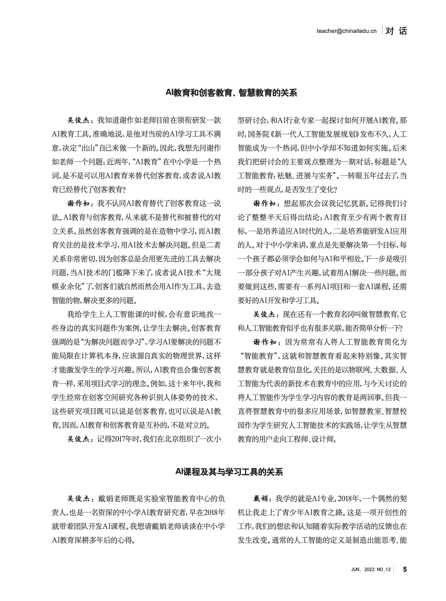
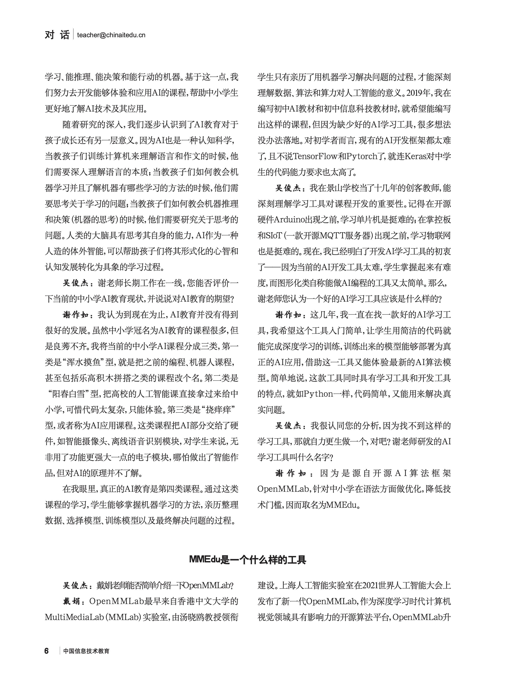
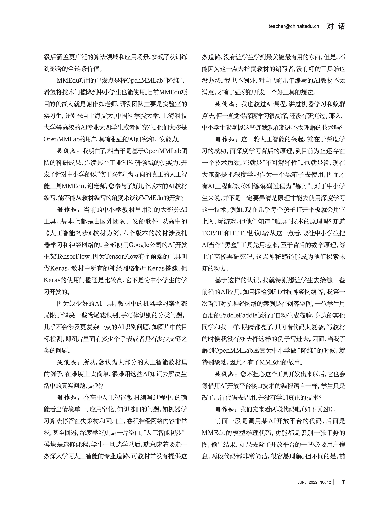
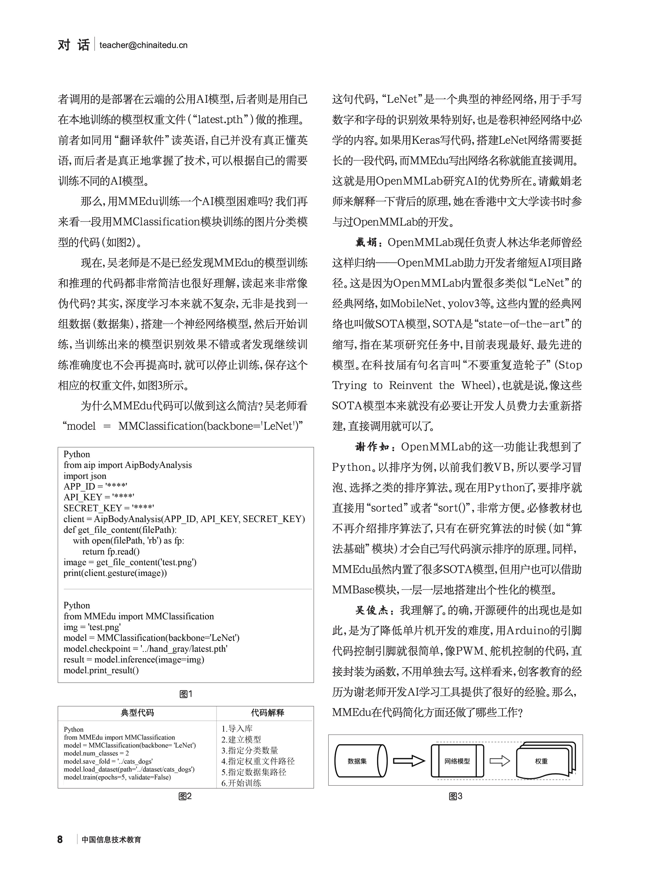
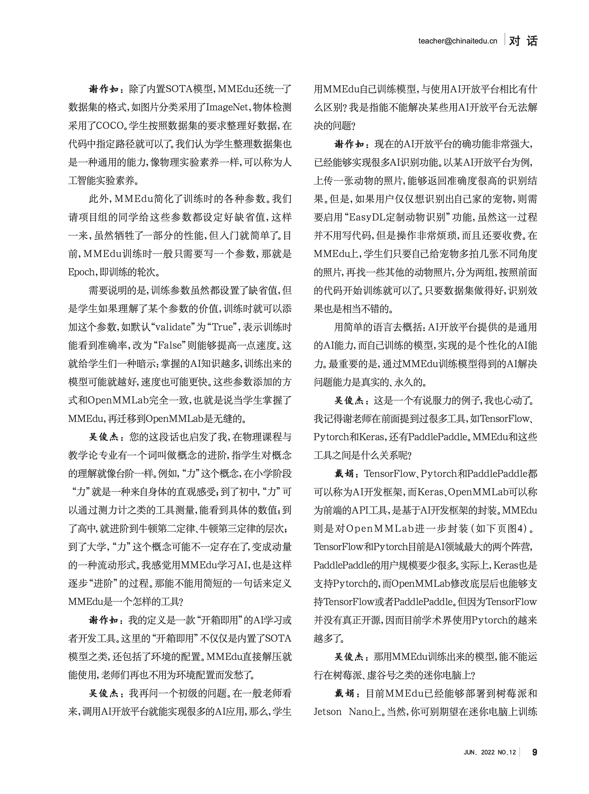
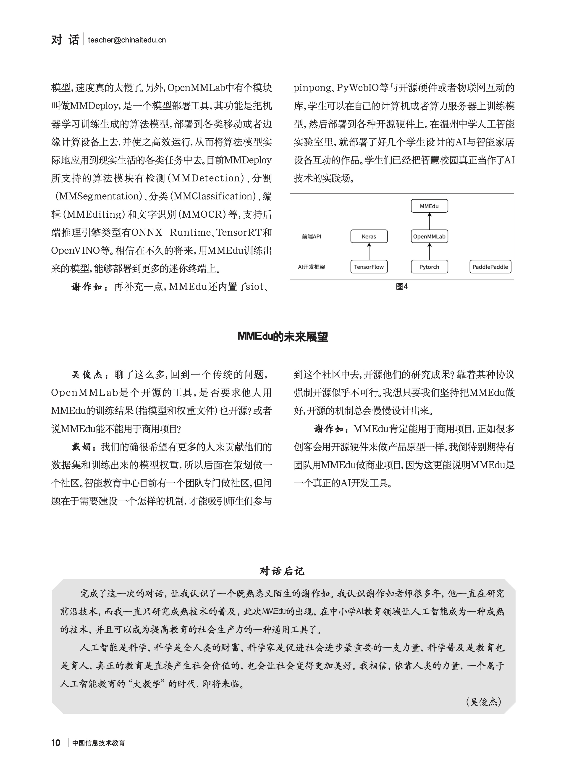

XEdu的故事
从MMEdu到XEdu
XEdu的缘起来自MMEdu，而MMEdu的诞生有很多版本，但所有的版本都围绕着“中小学AI教育”展开。
版本一
上海人工智能实验室成立初期，智能中心负责人戴娟找上海交大谈国智班（实验室和交大共同培养的人工智能班）的相关事宜。他们不约而同关注到中小学的人工智能教育，都认为中小学人工智能教育需要更加接地气的AI开发工具。于是开始选择一些技术门槛较低，又比较有趣的AI工具，尝试降维后给中小学生使用。
经过几次迭代，他们最后选择了OpenMMLab进行降维。
……
版本二
2020年，清华大学出版社的义务教育阶段信息技术教材开始修订，其中九年级分册要涉及人工智能。经过一番调研，几位主编发现小学教材可以用Mind+，高中教材绝大多数使用了Keras，那么初中呢？似乎也只能选择Keras。教材编写出来后，老师们都认为太难。
2022年，教材副主编谢作如老师（温州中学）在世界人工智能大会见到戴娟，聊起中小学人工智能需要好的AI开发工具这一问题。戴娟说实验室有好多工具，只是不知道是否适合中小学，也不知道应该往哪一个方向优化。两人在AI教育上观点一致，只是时间来不及，于是约好下次来温州讨论。
很快地，戴娟将实验室的工具整理了一个列表，来温州向谢作如一一展示。谢作如则一下子看中了内置SOTA模型的OpenMMLab。他们很快就组建了一个名称为“开源科创”的开发团队，以贾彦灏、王博伦等实验室智能教育中心实习生为核心，开始了OpenMMLab的“降维”工作。
MMEdu的正式启动时间是2022年1月。陆雅楠和邱奕盛的加入让小团队的力量大增，分为算法组和教研组。开源科创团队深度对比了Keras、FastAI、ModelArts等的AI开发工具，总结了深度学习的一般流程，认为AI模型训练和AI模型推理（应用开发）应该分离，而AI模型训练应该是公式化的操作，需要非常简洁的代码以降低技术门槛。
MMEdu很快就出了第一版，邀请了国内的骨干教师进行内部测试，得到好评。随着开发的深入，一些新的需求也逐步明晰起来。因为MMEdu面向计算机视觉，内置的都是视觉方向的SOTA模型，无法搭建一些简单的经典网络，如全连接神经网络（BP神经网络），再加上当前教材中又不可避免要讲经典机器学习，于是又增加了BaseNN和BaseML。这些工具合并起来，取了一个共同的名称——XEdu（全称为OpenXLab-Edu），和实验室的XLab对应。
为什么要开发XEdu
中小学的AI教育需要低门槛的框架或者工具。受限于认知水平，中小学生很难去理解AI的底层，尤其是数学原理。而当前的AI教育往往“满足于”给学生介绍AI发展史、专家系统、知识图谱和一些经典的机器学习原理，学生无法用学到的知识去解决一些真实问题。有人戏称这样的AI教育不过是在教屠龙技——因为世上已经无龙可屠，那么学了跟没学一样。
在2022年之前，中小学的AI课程中如果涉及到用代码训练AI模型，一般都选择了keras。虽然Keras有着种种不尽人意的地方，却找不到更好的替代品——至少比TensorFlow已经简单多了。但是Keras最大的问题在于代码过于底层，如搭建神经网络需要一层一层搭建，连搭建LeNet（一个最经典最基础的卷积神经网络模型）都要写好多代码，实际上学生只能照着教学或者范例抄一遍，并不能真正理解。那么，这样抄一遍的意义又在哪里？
经过多次的研讨，开源科创团队对当前中小学的AI教育进行了总结，认为其存在如下问题：
1）AI教育涉及的内容离应用太遥远，解决不了真实问题；
2）有些AI工具直接可用的，却又封装过度，如OpenCV和MediaPipe，只能算AI应用工具；
3）一本教材往往要涉及多个工具，门槛太高。如物体检测的Yolov3，常见代码基于PyTorch，GitHub上提供的是一个完整的项目，大部分教师不知道如何使用；再如图片风格化（学习迁移，对抗网络） ，老师们只能体验一下现成的应用。
XEdu的定位是面向中小学AI教育的开发和学习工具。
杂志专稿：中小学需要怎样的AI学习工具
20222年春，北京师范大学吴俊杰博士受《中国信息技术教育》杂志社委托，以“中小学 AI 教育需要怎样的工具“为主题，邀请戴娟和谢作如做了一期对话。





